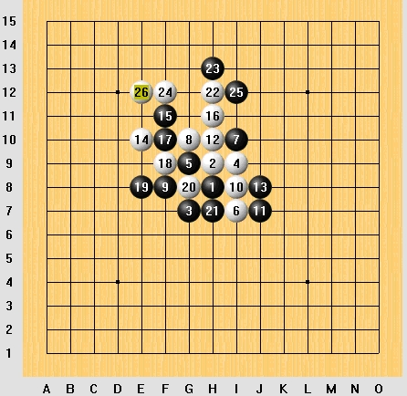
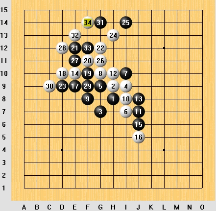
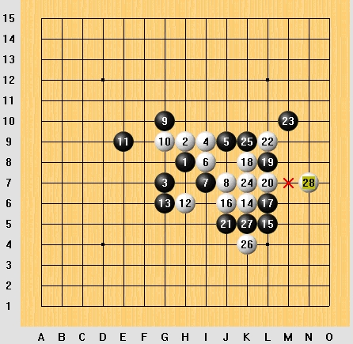
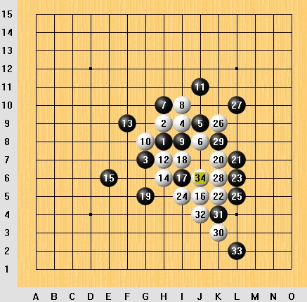
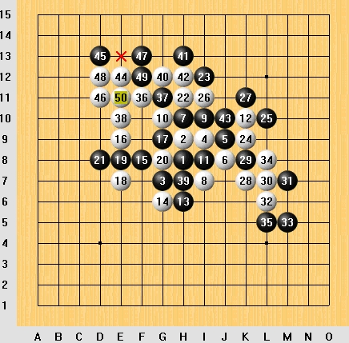

我的对局
首页
五子棋交流
#1 我的对局 作者：飞翔 发表时间：2006-3-10 16:55:41
呵呵 今天总算碰到个菜鸟...
前几天在ORC被狂砍 
对局一

#2 Re:我的对局 作者：飞翔 发表时间：2006-3-10 16:58:39
对局二

#3 Re:我的对局 作者：飞翔 发表时间：2006-3-10 17:00:55
对局三

#4 Re:我的对局 作者：飞翔 发表时间：2006-3-10 17:03:02
对局四

#5 Re:我的对局 作者：飞翔 发表时间：2006-3-10 17:05:56
对局五

#6 Re:我的对局 作者：飞翔 发表时间：2006-3-10 17:08:14
被我连杀五局 
#7 Re:我的对局 作者：414482371 发表时间：2006-3-13 11:21:40
第5局真精彩哈哈
#8 Re:我的对局 作者：梦之岛黄飞鸿 发表时间：2006-6-12 10:34:54
不错不错,这样会找回些自信,要不然天天在ORC被砍,心理不平衡呀。哈哈。
#9 Re:我的对局 作者：总趋势 发表时间：2007-1-4 1:03:21
第一局黑17走错位
#10 Re:我的对局 作者：news 发表时间：2007-1-8 17:26:58
飞翔同志是个高手哦!
以后要向你学习喽!
#11 Re:我的对局 作者：yidefei 发表时间：2007-1-17 13:47:15
我老是被人家连砍五局呀！
什么时候我才能砍得动人家呢？